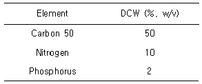
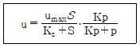
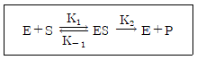
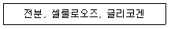

바이오화학제품제조기사 (2011-06-12 기출문제)
1과목: 미생물공학
1. E. coli 와 Saccharomyces cerevisiae 에서 모두 유지되는 shuttle vector를 만들고자 할 때, 이 shuttle vector가 두 미생물 내에서 유지되기 위하여 반드시 포함되어야 하는 두 가지 유전자의 예로 옳은 것은?
- E. coli의 bla 와 S. cerevisiae 의 URA3
- E. coli 의 replication origin 과 S. cerevisiae 의 replication origin
- E. coli 의 Tetr 과 S. cerevisiae 의 LEU2
- E. coli 의 bla 와 S. cerevisiae 의 LEU2
(정답률: 92%)

2. 요구르트 제조에 사용되는 젖산균은?
- Lactobacillus bulgaricus
- Leuconostoc mesenteroides
- Pediococcus cerevisiae
- Streptococcus pyogenes
(정답률: 100%)
3. 리파제를 생산하는 미생물을 스크린하기 위해 사용하는 기질은?
- 페니실린
- 카제인
- 전분
- 오일에멀젼
(정답률: 82%)
4. 계대배양법을 변형시킨 방법으로 산소의 공급을 제한하여 대사를 억제하는 방법이며, 곰팡이나 효모에 적합한 균주의 보존법은?
- 증류수 보존법
- 유동파라핀 중층 보존법
- 액체질소 보존법
- 실리카겔 보존법
(정답률: 94%)
5. 베타락탐(beta-lactam) 계 항생물질은?
- 세파로스포린 (cephalosporin)
- 스트렙토마이신 (streptomycin)
- 카나마이신 (kanamycin)
- 액티노마이신 (actinomycin)
(정답률: 86%)
6. Penicillin 합성과정에서 feedback regulation 을 일으키는 아미노산은?
- lysine
- cystein
- tryptophan
- valine
(정답률: 84%)
7. 발효산물은 생산시기와 세포성장시기에 따라 3가지로 분류되는데 다음 중 non-growth associated 에 가장 가까운 것은?
- 항생제
- 구연산
- 에탄올
- SCP (single cell protein)
(정답률: 94%)
8. 누룩곰팡이, 푸른곰팡이 등을 이용하여 산업적으로 생산되는 유기산은?
- 초산
- 젖산
- 구연산
- 에탄올
(정답률: 87%)
9. 미생물이 생산하는 바이오폴리머 (biopolymer)가 아닌 것은?
- dextran
- curdlan
- pectin
- pullulan
(정답률: 69%)
10. 에탄올의 산화로부터 생산될 수 있는 유기산은?
- 글루콘산
- 아이타콘산
- 청주
- 식초
(정답률: 84%)
11. 고체 배양법을 사용하지 않는 발효 식품은?
- 청국장
- 된장
- 청주
- 식초
(정답률: 98%)
12. 락톤(lactone)환을 가지고 있는 배당체로 세균의 단백질 합성을 저해하는 항생물질은?
- Tetracycline계
- Macrolide계
- β-Lactam계
- Aminoglycoside계
(정답률: 60%)
13. 다음 표에 나타낸 균체의 성분비를 참조하여 배지 내의 포도당(C6H12O6) 농도가 18 g/L 일 때, 알맞은 (NH4)2SO4 의 첨가농도를 구하면 약 몇 g/L인가? (단, 포도당과 의 분자량은 각각 180과 132 이다.)

- 13.2
- 6.8
- 2.6
- 1.4
(정답률: 65%)
14. 발효의 조절작용을 분석할 때, 복합배지(complex media) 보다 합성배지 (synthetic media)가 흔히 이용된다. 합성배지의 질소원으로 적합한 것은?
- Yeast extract
- Potassium phosphate
- Soybean meal
- Ammonium sulfate
(정답률: 79%)
15. 계대배양시 지켜야할 규칙으로 옳은 것은?
- 접종에 필요한 needle 이나 loop는 끝부분만 살짝 불로 달구어 사용한 후에 살균해야 한다.
- 유리 튜브의 끝은 버너 위에서 장시간 달구어야한다.
- 뚜껑은 열기 전 혹은 닫기 직전 튜브의 끝은 살짝 불로 살균해야 한다.
- 접종할 미생물을 취할 때 needle 이나 loop는 불에 달구어진 상태라야 한다.
(정답률: 89%)
16. Biotin의 조절을 필요로 하는 아미노산 발효는?
- Lysine 발효
- Valine 발효
- Threonine 발효
- Glutamic acid 발효
(정답률: 84%)
17. 미생물을 낮은 수분상태에서 보존할 때 사용되는 방법은?
- 유동파라핀 중층법
- 현탁법
- 동결건조법
- 계대배양법
(정답률: 96%)
18. Aspergillus oryzae 를 이용하여 α-amylase를 생산하고자 할 때 탄소원으로 가장 적합한 것은?
- Starch
- Sucrose
- Maltose
- Glucose
(정답률: 84%)
19. 박테리아를 이용한 라이신 (lysine) 발효 중에 발효조 내의 배양액이 박테리아의 성장에 의하여 혼탁하였는데 갑자기 맑게 되었다. 그 이유로 가장 타당한 것은?
- 파아지 (phage)의 감염
- 효모 (yeast)의 오염
- 곰팡이 (fungi)의 오염
- 대장균 (E. coli)의 오염
(정답률: 83%)
20. 배양 미생물의 성장 보조인자 (growth factor)로 적합하지 않은 것은?
- 아미노산(amino acid)
- 비타민(vitamin)
- 피리미딘(pyrimidine)
- 덱스트린(dextrin)
(정답률: 74%)
2과목: 배양공학
21. 동물세포 배양의 산업적인 용도로 옳은 것은?
- 탁솔과 같은 이차대사산물 유래의 항암제 생산에 이용 할 수 있다.
- 동물세포 배양 생산물은 보통 당쇄화된 단백질이다.
- 대량배양에 의해 내성을 지닌 미생물의 제거에 사용되는 항생제를 생산할 수 있다.
- 주로 식품첨가제나 화장품의 원료 생산에 유용하다.
(정답률: 66%)
22. 미생물의 이름을 이명법 (binary nomenclature)으로 올바르게 나타낸 것은?
- Bacillus subtilis
- Streptomyces griseus
- Escherchia Coli
- Saccharomyces cerevisiae
(정답률: 64%)
23. 산소소비속도 OUR 을 측정하여 유지계수 ms를 무시하고 세포농도를 측정하고자 한다. 곰팡이 배양에서 측정된 산소소비속도 OUR 이 0.393 O2/L·Uh이었고, 비생장속도 u 가 0.15 h-1 이었으며 산소에 대한 기질 수율 YX/O2가 2.87 g/g 이었다면 세포농도 X는?
- 7.32 g/L
- 7.52 g/L
- 7.72 g/L
- 7.92 g/L
(정답률: 68%)
24. 직접법으로 세포질량 농도를 결정하기 위해 가장 보편적인 방법으로 사용되는 것은?
- 헤모사이토미터를 이용한 세포수 결정
- 세포의 건조 중량 측정
- 평판 계수법
- 세포 내 성분의 측정
(정답률: 74%)
25. 세포증식은 비증식속도와 기질 사이의 관계를 모노드(Monod)의 모델식으로 표현할 수 있다. 어떤 미생물의 배양에서 기질의 농도가 매우 낮은 상태(기질농도 S = 0.001 g/L)에서 비증식속도는 기질 농도의 1차함수로 반응속도상수가 0.02 h-1 이고, 고농도 기질에서는 0차 함수로 반응속도상수가 0.5/h 로 나타났다. 모노드 모델의 상수인 최대 비증식 속도와 Monod 상수를 계산하면 얼마인가?
- 최대 비증식속도:0.5/h, Monod 상수:0.025g/L
- 최대 비증식속도:0.5/h, Monod 상수:0.5g/L
- 최대 비증식속도:0.25/h, Monod 상수:0.025g/L
- 최대 비증식속도:0.25/h, Monod 상수:0.5g/L
(정답률: 66%)
26. 연속식 반응기를 이용하여 세포를 생산하는데 유입 기질의 농도가 10g/L 이고, 발효조에서 나오는 농도가 2g/L 였다. 이때 세포의 수율은 0.5 이고 비성장 속도는 0.5 h-1 이다. 반응기의 부피가 10L 일 때 세포의 시간당 생산량(g)은 얼마인가?
- 5
- 10
- 15
- 20
(정답률: 47%)
27. 유전자 조작시 대장균을 숙주 (host)로 선정하는데 있어서 장점이 아닌 것은?
- 고농도 배양이 가능하다.
- 생장속도가 빠르다.
- 간단하고 값싼 배지가 사용된다.
- 단백질을 세포 밖으로 배출하지 않는다.
(정답률: 92%)
28. 독립영양세균(autotroph)에 대한 설명으로 옳은 것은?
- 질소를 이용하는 세균
- 탄수화물을 이용하는 세균
- 아미노산을 이용하는 미생물의 총칭
- CO2를 이용하여 유기물을 합성하는 세균
(정답률: 93%)
29. 재조합 단백질의 상업적 생산에 현재 이용되고 있는 미생물 중 효모가 대장균에 비해 갖는 장점이라 볼 수 없는 것은?
- 단백질을 수용성으로 분비 생산하여 정제공정의 단순화 및 수율 향상이 가능
- 아미노 말단 메티오닌(methionine) 잔기의 처리가 가능
- 일부 효모의 경우 내독소(endotoxin) 제거 공정이 불필요
- 단백질 분해효소에 의해 목적단백질이 변형되는 현상을 완벽히 효소
(정답률: 72%)
30. 원핵세포는 그람염색법에 의해 분류되는데 그람 염색시 그람양성을 나타내게 해주는 세포구조물은?
- 원형질
- 핵물질
- 세포벽
- 세포막
(정답률: 98%)
31. 미생물의 배양 시 배출가스를 분석하여 배출가스 중 탄소와 산소의 구성비로부터 구할 수 있는 것은?
- 용존산소농도
- 산소전달속도
- 산소소비속도
- 호흡률
(정답률: 76%)
32. 지수 생장기에서 미생물의 질량을 두 배로 하는 데 1 시간이 걸린다면 비성장속도는 얼마인가?
- 0.347hr-1
- 0.693hr-1
- 1.040hr-1
- 1.386hr-1
(정답률: 89%)
33. 현미경을 통하여 세포수를 측정하므로 배양된 세포의 밀도를 결정한다. 이 때 세포수를 측정하는데 사용하는 것은?
- 슬라이드 글라스
- 마이크로미터
- 화이브 글라스
- 헤모사이토미터
(정답률: 89%)
34. 해당작용 (Glycolysis)과 3탄산기 유기산 분해 (TCA cycle)로 생성하는 ATP는 총 38개라고 한다. 가장 이상적인 조건에서 NADH 1분자는 전자전달계를 통하여 몇 개의 ATP를 생성하는가?
- 1
- 2
- 3
- 4
(정답률: 78%)
35. 세균의 세포를 구성하는 성분에 대한 일반적인 설명 중 옳은 것은?
- 세포는 총무게의 약80% 정도로 물을 함유한다.
- 단백질은 세포 건조무게의 약10%를 차지한다.
- 핵산은 세포 총무게의 약 30%를 차지한다.
- 지방은 세포건조무게의 약1% 이하를 차지한다.
(정답률: 72%)
36. 일반 건조 세포구성 원소 중 가장 많은 질량을 차지하는 영양 원소는?
- 수소
- 산소
- 탄소
- 질소
(정답률: 82%)
37. 세포수밀도의 직접측정법이 아닌 것은?
- Coulter-counter로서 세포수 측정
- Plate count법을 이용한 CFU 측정
- Spectrophotometer로서 세포수 측정
- Petroff-Hausser 슬라이드로 세포수 계수
(정답률: 64%)
38. 킬레이팅제에 대한 설명 중 틀린 것은?
- 킬레이팅제의 리간드라는 특정기와 금속이온이 결합하여 불용성 화합물을 형성한다.
- Mg2+ 와 같은 이온들과 관계가 있다.
- 리간드에는 카르복실기, 아민기 등이 있다.
- 킬레이팅제는 배지에 낮은 농도로 사용된다.
(정답률: 72%)
39. 세포의 고정화 방법 중 한천, 알지네이트, 폴리아크릴아마이드와 같은 다공성 고분자를 이용하여 다공성 담체 안에 고정시키는 방법을 무엇이라 하는가?
- 포획법 (entrapment)
- 흡착법 (adsorption)
- 공유결합법 (covalent bound)
- 카르보디이미드법 (carbodiimide)
(정답률: 79%)
40. 동물세포 배양시 산소부족으로 축적되는 것은?
- 젖산
- 초산
- 시트르산
- 에탄올
(정답률: 94%)
3과목: 생물반응공학
41. 세포고정화 방법 중 수동적 고정화 (passive immobilization) 방법은?
- 고분자의 젤화
- 고분자의 침전
- 이온교환 젤화
- 생물막
(정답률: 89%)
42. 현탁(suspended) 미생물을 사용하는 반응 시스템과 비교하여 고정화(immobilized) 미생물을 사용하는 반응 시스템의 설명으로 옳은 것은?
- 확산문제로 인한 단위시간당 생성은 훨씬 떨어지나, 보다 많은양의 미생물과 산물을 생성한다.
- 최종 산물의 분리는 더 힘드나, 재사용이 가능하다.
- 온도에 대한 안정성이 더 높아 변성(denaturation) 온도에서도 운전할 수 있다.
- Wash-out 현상이 일어나는 범위 밖의 희석률에서도 운전할 수 있다.
(정답률: 79%)
43. 연속배양 생물반응기에서 희석속도 (dilution rate)의 단위는?
- L/h
- h
- g/L·gh
- h-1
(정답률: 81%)
44. 발효기에 관련된 내용 중 틀린 것은?
- 발효기의 탐침 설치시 기체가 새는 것을 방지하여야 한다.
- 큰 발효기는 보통 열제거를 위한 내부 코일이나 자켓이 있는 용기를 사용한다.
- 발효기에서 발효시 내용물들은 액체 및 기체상만 존재한다.
- 교반탱크 발효기는 기체전달에 있어 높은 부피물질 전달계수(KLa)를 갖는다.
(정답률: 87%)
45. 연속 증기 멸균을 회분 증기 멸균과 비교할 때 특징이 아닌 것은?
- 단위시간당 멸균 효율이 높다.
- 배지의 손상이 적다.
- 혼합해서 살균해서는 안 되는 배지 성분들의 살균이 불가능하다.
- 작업시간이 단축된다.
(정답률: 69%)
46. 어떤 미생물의 비성장속도 u는 기질농도 S, 생성물 농도 P에 대해 다음의 식으로 표시된다. 다음중 u를 높일 수 있는 방안으로 가장 옳은 것은? (단, Ks는 기질포화상수이고, KP는 산물 저해상수이다.)

- 연속배양을 한다.
- 생성물을 제거하며 배양한다.
- 기질의 농도를 낮추어 준다.
- 미생물을 고정화한다.
(정답률: 70%)
47. 다음 효소의 표면 고정화에 관한 설명 중 틀린 것은?
- 흡착은 효소가 반데르발스 힘 또는 분산력과 같은 힘에 의하여 지지입자의 표면에 부착하는 것이다.
- 흡착된 효소는 활성부위가 영향을 받지 않아서 흡착이 되더라도 거의 모든 활성이 유지된다.
- 효율적인 고정화를 위해서는 지지물질의 표면을 전처리 할 필요가 있다.
- 공유결합은 결합력이 약하기 때문에 강한 유체역학적 힘이 존재할 때 효소의 탈착이 문제가 된다.
(정답률: 80%)
48. 같은 조건하에서 스팀 멸균을 할 때 가장 멸균하기 어려운 것은?
- 일반세균 (bacteria)
- 효모 (yeast)
- 균 포자 (bacterial spore)
- 박테리오파지 (bacteriophage)
(정답률: 73%)
49. 균형성장기에 있는 미생물에 대한 설명으로 틀린 것은?
- 생체 조성이 일정하다.
- 생체구성물질의 합성속도는 미생물 비성장속도(specific growth rate)에 비례한다.
- 생체 구성 물질의 배가 시간(double time)은 미생물 전체의 배가시간과 같다.
- 탄소원소모속도와 질소원소모속도 사이에는 비례 관계가 존재하지 않는다.
(정답률: 86%)
50. 사상균 배양의 경우 일반적으로 배양액의 점도가 매우 높아져 산소공급에 문제가 발생 할 수 있다. 이런 문제를 최소화하기에 다음 중 가장 적합한반응기 형태는?
- 교반형 (stirred tank type)
- 유동층 (fluidized-bed type)
- 기포탑 (bubble column type)
- 공기부양식 (air-life type)
(정답률: 80%)
51. 반응기 내의 호기성 미생물에 대한 산소의 물질 전달에 관한 내용으로 옳은 것은?
- 산소는 분자량이 작아서 가스 상태의 산소가 세포 내로 확산되어 들어갈 수 있다.
- 호기성 미생물이 필요로 하는 용존 산소를 지속적으로 공급한다.
- 잠시 동안의 산소공급중단은 호기성 미생물의 신진대사과정에 크게 영향을 주지 못한다.
- 산소는 용해도가 높기 때문에 반응기 내로 적은 양을 공급하고 잘 휘저어 주기만 하면 된다.
(정답률: 82%)
52. 빠른 평형을 가정한 효소 반응에서 최대반응속도 Vm에 영향을 주는 요인으로 가장 거리가 먼 것은?
- 반응 온도
- 효소 농도
- 기질 농도
- 활성제 농도
(정답률: 58%)
53. 담체에 고정화된 미생물을 이용하는 반응기 중 전단 응력에 강한 가장 단단한 담체를 사용해야 하는 반응기는?
- 유동층 반응기
- 충진층 반응기
- 공기부상식 반응기
- 교반식 반응기
(정답률: 92%)
54. 효소(E)가 기질(S)과 반응하여 효소-기질화합물 (ES)을 생성하고 생성물(P)을 생성하는 반응은 다음 과 같다. 이때 Michaelis 상수의 값은? (단, k1, k2, k-1은 각각 속도 상수를 나타낸다.)

- K-1/K1
- K1/K-1
- (K-1 + K2)/K1
- (K1 + K2)/K-1
(정답률: 80%)
55. 다음 기체의 여과에 관련된 기작 중 심층여과기(depth filter)와 관련이 가장 적은 것은?
- 직접적인 차단
- 정전기적 효과
- 관성 효과
- 체질(sieving) 효과
(정답률: 67%)
56. 다음의 효소 고정화 담체 중 이온교환에 의한 고정화 담체인 것은?
- 활성탄 (activated carbon)
- 실리카겔 (silica gel)
- 다공성세라믹
- CM-셀룰로오스 (cellulose)
(정답률: 72%)
57. 121℃에서 미생물이 1/10로 감소하는데 걸리는 시간이 1.5분이라면 총 1011개의 미생물을 10-6개로 감소시키는데 걸리는 시간은 약 얼마인가?
- 15분
- 20분
- 26분
- 30분
(정답률: 76%)
58. 다음 중 효소 고정화 방법이 다른 하나는?
- 실리카겔 (silica gel)
- CM-셀룰로오스 (cellulose)
- 칼슘 알지네이트 (calcium alginate)
- 활성탄 (activated carbon)
(정답률: 71%)
59. 교반형 생물반응기에서 산소전달계수 KLa를 증가시키고자 할 때 부적합한 방법은?
- 교반기의 회전속도를 증가시킨다.
- Baffle을 설치한다.
- 교반기의 수를 증가시킨다.
- 반응기의 지름을 증가시킨다.
(정답률: 79%)
60. 고정화 효소와 고정화되지 않은 자유효소와의 차이점에 관한 설명으로 가장 옳은 것은?
- 고정화효소는 일반적으로 안정성이 더 높다.
- 고정화 효소는 자유효소에 비하여 항상 경제적으로 이익이다.
- 온도에 대한 안정성은 고정화 효소가 더 작다.
- 고정화 효소는 pH에 대한 민감성이 증가한다.
(정답률: 79%)
4과목: 생물분리공학
61. 다음 아미노산 중 황원소를 포함하고 있는 것은?
- 리신
- 시스테인
- 히스티딘
- 티로신
(정답률: 88%)
62. 분리·정제 공정에서 단백질 침전 공정이 아닌 것은?
- 무기염의 첨가
- 저온에서 유기용매 첨가
- 가열하여 단백질을 변성
- 다공성 물질 첨가
(정답률: 59%)
63. 발효액으로부터 효소를 분리하고 정제하는데 수반되는 주요 단계로 다음 중 가장 처음에 수행 하여햐 할 단계는?
- 세포, 불용성입자 및 거대분자 같은 고체 분리
- 생성물의1차분리 또는 농축과 대부분의수분제거
- 오염 화학 물질의 정제 또는 제거
- 건조와 같은 생성물의 제조
(정답률: 86%)
64. 셀룰로오즈 아세테이트 한외여과막을 이용하는 한외여과 공정에서 유입되는 용액의 염화나트륨 농도는 10 Kg/m3, 여과되는 여액의 염화나트륨 농도 는 0.42 Kg/m3 이었다. 이 때 염화나트륨에 대한 한외여과막의 배제계수는?
- 0.942
- 0.958
- 0.962
- 0.973
(정답률: 74%)
65. 한외여과(ultrafiltration) 공정에 의한 단백질 농축시 발생하는 농도분극 (concentration polarizati -on)현상에 대한 설명 중 틀린 것은?
- 농도분극은 막 표면에 고분자 용질이 축적되는 현상으로써 여과되는 용매의 막 투과 flux 를 감소시킨다.
- 농도분극이 형성되면 원하는 용매 여과 flux 를 얻기 위해서 여과압력을 낮추어야 한다.
- 농도분극 현상이 심해지면 막 표면에 젤(gel)층이 형성되고 원활한 막 여과에 대한 저항으로 작용한다.
- 여과 flux 를 회복하고 정상적인 조업을 하려면 적당한 방법으로 막 세척 또는 역 세척을 해야한다.
(정답률: 79%)
66. 일반적으로 회분식 흡착공정에서 흡착수율에 영향을 미치는 공정인자로 가장 거리가 먼 것은?
- 교반력
- 교반 시간
- 흡착제의 입자 크기
- 흡착제의 사용량
(정답률: 55%)
67. 원심분리기 형태 중 유입물의 고형물 함량(vol%)이 높을 때 가장 적합한 것은?
- 경사분리기
- 노즐 분리기
- 고형물 보울 분리기
- 고형물분출분리기
(정답률: 55%)
68. Penicilin G의 분리 정제 공정 순서를 옳게 나타낸 것은?
- 배양물 - 균체분리 - 원심역류 추출 - 결정석출 - 정제
- 배양물 - 균체분리 - 결정석출 - 원심역류 추출 - 정제
- 배양물 - 원심역류 추출 - 균체분리 - 결정석출 - 정제
- 배양물 - 균체분리 - 원심역류 추출 - 정제 - 결정석출
(정답률: 72%)
69. pK1은 2 이고 pK2는 10인 단백질의 등전점은?
- 2
- 6
- 8
- 12
(정답률: 96%)
70. 일정한 조건하에서 발효공정의 계속적인 진행이 방해되는 요인으로서 배지 중의 영양소 결핍이나 독성 생성물의 축적을 들 수 있다. 발효 중 생성되는 다음 생성물 중 동일한 농도에서 세포의 생장에 미치는 독성이 가장 강한 것은?
- 에탄올
- 부탄올
- 아세톤
- 아미노산
(정답률: 85%)
71. 다음 중 면역친화성(immuno-affinity)에 의해 단백질을 정량하는 방법은?
- 로우리 (Lowry)
- ELISA
- 쿠마지 (Coomassie)
- 뷰렛 (Biuret)
(정답률: 91%)
72. 세포를 발효액으로부터 분리하는 가장 일반적인 기술은?
- 여과 또는 원심 분리
- 추출
- 흡착
- 크로마토그래피
(정답률: 92%)
73. 어떤 크로마토그래피 컬럼에서 일정 압력을 이용하여 용액을 주입할 때 관찰한 액체의 겉보기 유속 (superficial velocity)은 10 mL/min 이다. 이 컬럼 내 공극률(void fraction)이 0.4 라면 실제 컬럼내에서 충진물 사이에서 흐르는 내부유속(interstitial velocity)은 몇 mL/min 인가?
- 4
- 10
- 25
- 40
(정답률: 58%)
74. 추출공정에 적합한 용매가 갖춰야 할 조건으로 가장 타당한 것은?
- 고점성
- 회수의 용이성
- 발효액과의 상호용해성
- 발효액과 비슷한 밀도
(정답률: 90%)
75. 핵산은 중성 pH에서 이온교환에 의해 비교적 쉽게 분리 될 수 있다. 그 이유는 다음 중 어떤 물질 때문인가?
- 리보스 (ribose)
- 인산기 (phosphate)
- 퓨린 (purine)
- 피리미딘 (pyrimidine)
(정답률: 96%)
76. 비이온성 계면활성제에 해당하는 것은?
- Triton X-100
- Sodium sulfonate
- Sodum dodecyl sulfate (SDS)
- Cetyl trimethyl ammonium bromide (CTAB)
(정답률: 74%)
77. 다음 중 가장 속도 조절적 (Rate controlled)인 분리 기술은?
- 용리크로마토그래피 (elution chromatography)
- 추출 (extraction)
- 침전 (precipitation)
- 막분리 (membrane separation)
(정답률: 95%)
78. 액-액 추출에서 추출제 (solvent)의 선택조건에 들지 않는 것은?
- 선택도가 높을 것
- 용질이나 불활성 물질이 다 잘 녹을 것
- 회수가 용이할 것
- 화학적으로 안정할 것
(정답률: 98%)
79. 이온성 물질에 대한 이온교환수지의 선택도의 이란적인 경향에 대한 설명 중 옳지 않은 것은?
- 이온의 전하가(valence)가 클수록 이온교환 선택도가 크다.
- 이온성 분자의 극성이 클수록 이온교환 선택도가 줄어든다.
- 카르복실기가 있는 양이온교환수지의 선택도는 pH에 따라 변할 수 있다.
- 4가 암모늄기가 있는 음이온 교환수지의 선택도는 pH 변화에 거의 변화가 없다.
(정답률: 71%)
80. 소수성 (hydrophobic interaction)을 이용하는 크로마토그패리법은 ?
- 젤투과(Gel permeation) 크로마토그래피
- 흡착(Adsorption) 크로마토그래피
- 친화성(Affinity) 크로마토그래피
- 역상(Reverse phase) 크로마토그리피
(정답률: 80%)
5과목: 생물공학개론
81. 어떤 용액의 흡광도를 측정한 결과 0.456이었다. 이 용액의 투광도(%)는 약 얼마인가?
- 2.92%
- 34.28%
- 68.19%
- 74.36%
(정답률: 56%)
82. 진핵세포의 세포소기관과 그 기능이 잘못 연결된 것은?
- 핵 - DNA 합성
- 조면 소포체 - 지방 합성
- 리보솜 - 단백질 합성
- 액포 - 세포의 확대
(정답률: 79%)
83. [보기] 중 다당류에 해당하는 것은 모두 몇 개 인가?

- 0개
- 1개
- 2개
- 3개
(정답률: 89%)
84. 비중 1.15 인 28wt% 염산용액으로 0.4M 염산용액 1L를 만들기 위해 필요한 28wt% 염산의 양은 몇 mL 인가?
- 22.7
- 45.3
- 52.1
- 90.7
(정답률: 66%)
85. 발효조에 방해판(baffle)을 설치하는 이유는?
- 레이놀즈수를 감소시키기 위해
- 층류(laminar flow)를 유지하기 위해
- 동력소비를 줄이기 위해
- 난류(turbulent flow)를 만들기 위해
(정답률: 89%)
86. 특정 단백질의 항체를 이용하여 단백질의 분자량, 종류 및 발현 정도를 확인할 목적으로 사용할 수 있는 분석법은?
- Eastern blotting
- Southern blotting
- Western blotting
- Northern blotting
(정답률: 83%)
87. 다음 중 빛 에너지를 당과 같은 화학에너지로 전환시키는 세포내 소기관은?
- 엽록체
- 미토콘드리아
- 핵
- 리소좀
(정답률: 96%)
88. GMP의 3대 요소에 해당되지 않는 것은?
- 사후관리
- 인원관리
- 시설관리
- 생산관리
(정답률: 80%)
89. 염산은 강산이므로 수용액 중에서 완전히 해리된 상태로 존재한다. 농도가 10-8M 인 염산 수용액의 pH는?
- 8.0
- 7.0보다 약간 큰 값
- 7.0보다 약간 작은 값
- 5.0 이하
(정답률: 62%)
90. 생식세포이 염색체 속에 들어 있는 것으로 DNA로 구성된 기본단위를 무엇이라 하는가?
- 유전자
- 미토콘드리아
- 핵
- 리보솜
(정답률: 94%)
91. 박테리아에서 유전자가 한 세포에서 다른 세포로 전달되는 방법이 아닌 것은?
- 형질전환 (Transformation)
- 전사 (Transcription)
- 형질도입 (Transduction)
- 접합 (Conjugation)
(정답률: 90%)
92. 10-2N NaoH 수용액의 pH는?
- 2
- 8
- 12
- 13
(정답률: 81%)
93. 의약품 생산에 있어 FDA 승인을 받기 위한 검증 종합 계획서에 포함되는 내용으로 가장 거리가 먼 것은?
- 방법론 (methodology)
- 비용 (cost)
- 공정도 (process flow diagram)
- 검정 (qualification)
(정답률: 83%)
94. 재조합 대장균을 이용하여 외래 단백질 생산 시의 문제점은 내포체 (inclusion body)의 생성이다. 이를 방지할 수 있는 방법이 아닌 것은?
- 온도를 낮추거나 유도체 (inducer) 농도를 조절하여 외래 단백질의 생산속도를 느리게 한다.
- Peptidyl prolyl isomerase (PPIase) 등을 이용하여 세포외부로 배출한다.
- 샤페론 (Chaperone)을 동시 발현시켜 접힘 중간체를 안정화시킨다.
- 용해도가 높은 단백질과 융합한 융합 단백질을 이용하여 용해도를 증가시킨다.
(정답률: 66%)
95. 단백질은 아미노산 곁가지에 많은 수의 약산성 그룹과 약염기성 그룹을 가지고 있다. 생명계에서 이들 그룹이 하는 역할이 아닌 것은?
- 다른 분자와 이온 결합하는 역할
- 전기적 중성을 유지하는 역할
- pH 변화에 대한 완충작용 역할
- 다른 분자와 소수성 결합하는 역할
(정답률: 58%)
96. 다음 중 동물 세포 배양기의 교반 장치 설계시 가장 중요하게 고려되어야 할 동물세포의 특성은?
- 표면부착성
- shear 민감성
- 삼투압민감성
- 배지내 혈청 필요성
(정답률: 71%)
97. 변성된 DNA로부터 재원형화(renaturation)시키는 방법으로 가장 거리가 먼 것은?
- DNA의수소결합이 해체되는 조건을 유지시킨다.
- DNA 수용액의 온도를 낮춘다.
- DNA 수용액의 pH를 중성으로 맞춘다.
- DNA 수용액에 첨가된 변성제를 묽혀준다.
(정답률: 75%)
98. 0.002M H2SO4 용액 1500 mL를 만들려면 5M H2SO4 용액이 몇 mL 필요한가?
- 0.4
- 0.5
- 0.6
- 0.7
(정답률: 79%)
99. 어떤 화합물의 등전점에 대한 내용으로 틀린 것은?
- 알짜전하(net charge)가 없는 pH
- 전기장 내에서 분자의 이동이 없는 pH
- 전기적으로 중성인 pH
- 산의 농도와 짝산의 농도가 같은 때의 pH
(정답률: 88%)
100. 다음은 단백질을 생물학적 기능에 따라 분류 한 것이다. 이들 중 단백질의 예가 잘못된 것은?
- 구조단백질 : 케라틴, 콜라겐
- 방어단백질 : 항체, 트롬빈
- 촉매단백질 : 헤모글로빈, 혈청알부민
- 조절단백질 : 인슐린, 성장호르몬
(정답률: 86%)